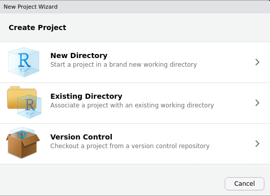
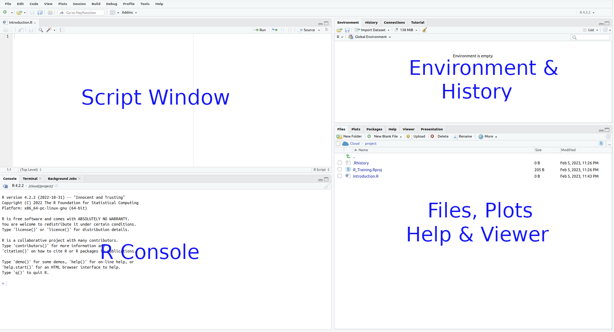

Using RStudio To Write Scripts
ASI: Introduction to R
RStudio
Introduction to RStudio
R and RStudio are two separate but connected things
Ris like the engine of your car
. . .
RStudiois the ‘cabin’ we use to control the engine- Comes with extra features not related to
R - Known as an IDE (Integrated Development Environment)
- Comes with extra features not related to
. . .
Rdoes all the calculations, manages the data, generates plotsRStudiohelps manage our code, display the plots etc
What is RStudio
- RStudio is product of a for profit company (Posit)
- RStudio (Desktop) is free
- RStudio Server has annual licence fee of $’000s
- Posit employs many of the best & brightest package developers
- e.g.
tidyverse,bookdown,reticulate,roxygen2etc - The CEO (JJ Allaire) is still an active developer
- e.g.
- Other IDEs also exist (e.g. emacs, VSCode)
- I remember being at the launch of RStudio (Coventry, 2011). It was a room full of R programmers thinking “holy crap, this changes everything”
- RStudio/Posit is a corporation whilst R is an academic-led volunteer community. So far relatively good relationship
- Heard JJ Allaire present some of his latest work a few weeks ago
Some very helpful features of RStudio
- We can write scripts and execute code interactively
- Auto-completion by hitting the
<tab>key - Use of
R Projectsto manage code/data for each project/analysis - We can see everything we need (directories, plots, code, history etc.)
- Integration with other langauges
- markdown, \(\LaTeX\), bash, python, C++, git etc.
- Numerous add-ons to simplify larger tasks
Important Setup
- Create a directory on your computer for today’s material
- We recommend
R_Trainingin your home directory
- We recommend
. . .
- Now open
RStudioRStudiowill always open in a directory somewhere- Look in the
Filespane (bottom-right) to see where it’s looking - This is also the working directory for
R
. . .
We want RStudio to be looking in our new directory (R_Training)
\(\implies\)R Projects make this easy
Create an R Project
(Not needed for any using the Posit cloud)
File > New Project > Existing Directory
- Browse to the
R_Trainingdirectory \(\implies\)Create Project
. . .
- The
R Projectname is always the directory name - Not essential, but good practice and extremely useful
- The Project Menu is in the top-right of RStudio
R Projectsare simply a wrapper for keeping an analysis organised- Will always open in the R Project directory
- You can easily navigate to a directory with all scripts and data
- Makes managing file paths from your code very simple
- R Projects can be particularly helpful when loading external files
- Also when saving/exporting lots of files as part of your analysis
Create An Empty R Script
File>New File>R Script- Save As
Introduction.R
RStudio

The Script Window
- This is just a text editor.
- We enter our commands here but they are not executed
- We can keep a record of everything we’ve done
- We can add comments to our code
- Comments start with the
#symbol
- We’ll return here later \(\implies\) but first a quick tour
The R Console
The R Console
- This is the R Console within the RStudio IDE
- We’ve already explored this briefly
. . .
- In the same grouping we also have Terminal
- An approximation of a
bashterminal (or PowerShell for Windows)
- An approximation of a
- Background Jobs is used when compiling RMarkdown & Quarto
- Probably won’t get that far in this workshop
The R Console
As well as performing simple calculations:
Rhas what we call anEnvironment(i.e. a Workspace)- We can define objects here or import data
- Similar to a workbook in Excel with multiple worksheets
- Or maybe a desktop in your study with crap everywhere
- Much more flexible & powerful
When we create a new sheet in Excel, we’re actually creating an object. Most commonly, it’s named Sheet1 or something similar
. . .
- Objects can look like spreadsheets, be a single number or even empty
- ’omics data often has more complicated but defined structures
Rperforms calculations & runs processes on these objects
The R Environment
In the R Console type:
x <- 5. . .
Where have we created the object x?
- Is it on your hard drive somewhere?
- Is it in a file somewhere?
. . .
- We have placed
xin ourR Workspace - Formally known as your
Global Environment

The R Environment
- The
R Environmentis like your desktop - We keep all our relevant objects here
- Multiple objects are usually created during an analysis
- Can save all the objects in your workspace as a single
.RDataobject Rcan be set to automatically save your environment on exit
The History Tab
- Next to the Environment Tab is the History Tab
- Keeps a record of the last ~200 lines of code
- Very useful for remembering steps during exploration
- Best practice is to enter + execute code from the Script Window
. . .
- We can generally ignore the Connections and any other tabs
- A
gittab will also appear for those who use git in their project
- A
Accessing Help
?sqrt- This will take you to the
Helppane for thesqrt()function- Contents may look confusing at this point but will become clearer
. . .
- Many inbuilt functions are organised into a package called
base- Packages group similar/related functions together
baseis always installed and loaded withR
- Click on the underlined word
Indexat the bottom for a list of functions in thebasepackages- Absolutely no need to learn any of these
- May be issues with
URL '/help/library/base/html/00Index.html' not found - The examples in this help page are a bit rubbish…
Additional Sources For Help
- Help pages in
Rcan be hit & miss- Some are excellent and informative \(\implies\) some aren’t
- Bioconductor has a support forum for Bioconductor packages
- All packages have a vignette (again varying quality)
. . .
- Google is your friend \(\implies\) maybe ChatGPT?
. . .
- StackOverflow is usually very helpful
- Some blog posts showing how to do something
- YouTube channels
As a package author, I’m always reading my own help pages. I simply can’t remember everything I’ve written
The Plots Pane
- We’ve already seen the Files pane
- Plots appear in the Plots pane
plot(cars)Other Panes
- The Packages Pane is dangerous
- Temptation to click is strong
- Very bad for reproducible research!!!
- Can be disabled by popular request (I always do)
. . .
- Viewer Pane is used when compiling HTML documents from RMarkdown
. . .
- Every tab can be minimised/maximised using the buttons on the top right
- Window separators can be be moved to resize panes manually
Cheatsheet and Shortcuts
Help > Cheatsheets > RStudio IDE Cheat Sheet
Page 2 has lots of hints:
Ctrl + 1places focus on the Script WindowCtrl + 2places focus on the ConsoleCtrl + 3places focus on the Help Tab
The Script Window
RStudio: The Script Window
Best practice for analysis is to enter all code in the Script Window
- This is a plain text editor \(\implies\)
RStudiowill:- highlight syntax for us
- help manage indenting
- enable auto-completion (it can be slower than your typing)
- Enter code in your script and send it to the R Console
- We save this file as a record of what we’ve done
- Code is the important object \(\implies\) can recreate all results
RStudio: The Script Window
- We can write comments by starting a line with the
#- Anything following this symbol will not be executed
- Can write notes to ourselves and collaborators
- We can also place this at the end of a line with a comment
- Enter the following in your script
Introduction.Rbut don’t do anything else
# Create an object called x
x <- 1:5RStudio: The Script Window
# Create an object called x
x <- 1:5To send this to the Console:
- Place the cursor on the line with
x <- 1:5thenCtrl+Enter(Cmd+Enteron OSX), or - Select one or more entire lines using the mouse then
Ctrl+Enter(orCmd+Enter) - Or after selecting one or more lines you can click the
Runbutton- Be careful to select all the correct text though
- It’s very easy to miss the first character
- This will have overwritten our previous object.
- Check the Environment Tab to see the changes
RStudio: The Script Window
As well as creating objects, we can write general code
# x is a vector. How many values are in the vector?
length(x)[1] 5Enter this in your Script Window then send to the Console
. . .
Sometimes, we copy the output back to the Script Window if it’s important
length(x)
# [1] 5Including comments describing your intention, is highly advisable
RStudio: The Script Window
When we executed length(x) did we create a new object?
. . .
No, we just called the function length() and executed it on x
The output of the function was simply printed to the console
. . .
Vectors
- The object
xis avector\(\implies\) fundamental structure inR- Like a single column in a spreadsheet
- In
Rwhen we pass avectorto a function, the entire vector is evaluated- No need to select a column from your spreadsheet
. . .
Add the following to your script
# Are any values of x are greater than one?
x > 1[1] FALSE TRUE TRUE TRUE TRUE. . .
Notice we have a value returned for each element of x
Vectors
- Enter the following in your script with your own comments
- Execute in the Console
- Some will return 5 values, others will be single values
x^2
sqrt(x)
max(x)
sum(x)
mean(x)
sd(x)
typeof(x)Discuss what you think the values mean as you write your comments
Vectors
xclearly contains numbers (i.e. integers)- Can be checked using
typeof(x) - A vector only contains one type of value
- Can be checked using
- Vectors can also contain characters
- We cannot perform calculations on these vectors
- Some functions do work though
. . .
- Enter the following in your script then execute
# R has an inbuilt vector with the lower case letters of the alphabet
letters
# How many letters are in this vector?
length(letters)
# Can characters have a maximum value?
max(letters)
# Can we add characters to find a sum?
sum(letters)Subsetting Vectors
- We can subset vectors using square brackets
[]
# What are the first 5 letters of the alphabet?
letters[1:5][1] "a" "b" "c" "d" "e"Vector Types
R has 6 types of atomic vectors \(\implies\) only 4 are commonly used
. . .
logical: Can only containTRUEorFALSE- Are binary (i.e. single-bit) values
. . .
integer: Only contains whole numbers- 32 bit upper limit
. . .
numeric: Contains numbers with decimal points (akadoubles)- Larger memory requirements than integers
. . .
character
Remaining types are:
complex(sqrt(-1))rawholds raw bytescharToRaw("abc")
Examples
A logical vector is returned by a logical test
# This returns a logical vector the same length as x
# Let's save the output as a new vector using the <- symbol
logi_vec <- x > 1
logi_vec[1] FALSE TRUE TRUE TRUE TRUEtypeof(logi_vec)[1] "logical". . .
Taking square roots will return values with decimal points
# The square roots have decimal points so they are doubles
dbl_vec <- sqrt(x)
dbl_vec[1] 1.000000 1.414214 1.732051 2.000000 2.236068typeof(dbl_vec)[1] "double"Coercion
- Vectors can be coerced to other types
# Coercing x to a character vector will show every element with quotation marks
char_vec <- as.character(x)
char_vec[1] "1" "2" "3" "4" "5"typeof(char_vec)[1] "character". . .
- Can easily coerce in order of complexity without information loss
- Information is lost going backwards
as.integer(logi_vec)[1] 0 1 1 1 1as.logical(x)[1] TRUE TRUE TRUE TRUE TRUEAdvanced Subsetting
- We could use our results from the logical test to subset
x
# These two commands return the same vector
x[x > 1][1] 2 3 4 5x[logi_vec][1] 2 3 4 5# This returns the positions within logi_vec which are TRUE
which(logi_vec)[1] 2 3 4 5Creating Vectors
- Normally to create vectors we use
c()- Stands for combine (i.e. we combine vectors)
- Is an empty vector (i.e. NULL) by default
c()NULL. . .
- Add your own comments to describe the following
# Make a vector of doubles with names for each value
rnd <- c(a = 1, b = 5.2, c = 100, d = 3.1)
rnd
length(rnd)
typeof(rnd)
rnd > 5
which(rnd > 5)
rnd[rnd > 5]
names(rnd)
rnd["b"]Conclusion
- Make sure you save the file
Introduction.R - This is now a complete R Script
- Can be re-run at any time in the same order
- Will always produce identical results
. . .
- We’ve also (accidentally) learned about vectors
- Will be super helpful for the rest of the workshop
- Also the most fundamental structure in
R
. . .
- Other languages (e.g.
python,C,C++) don’t use vectors- Step through the entire vector one value at a time
for (i in 1:5) print(sqrt(x[i]))- Clearly these vectors were trivial
- In reality, often dealing with thousands or millions of values